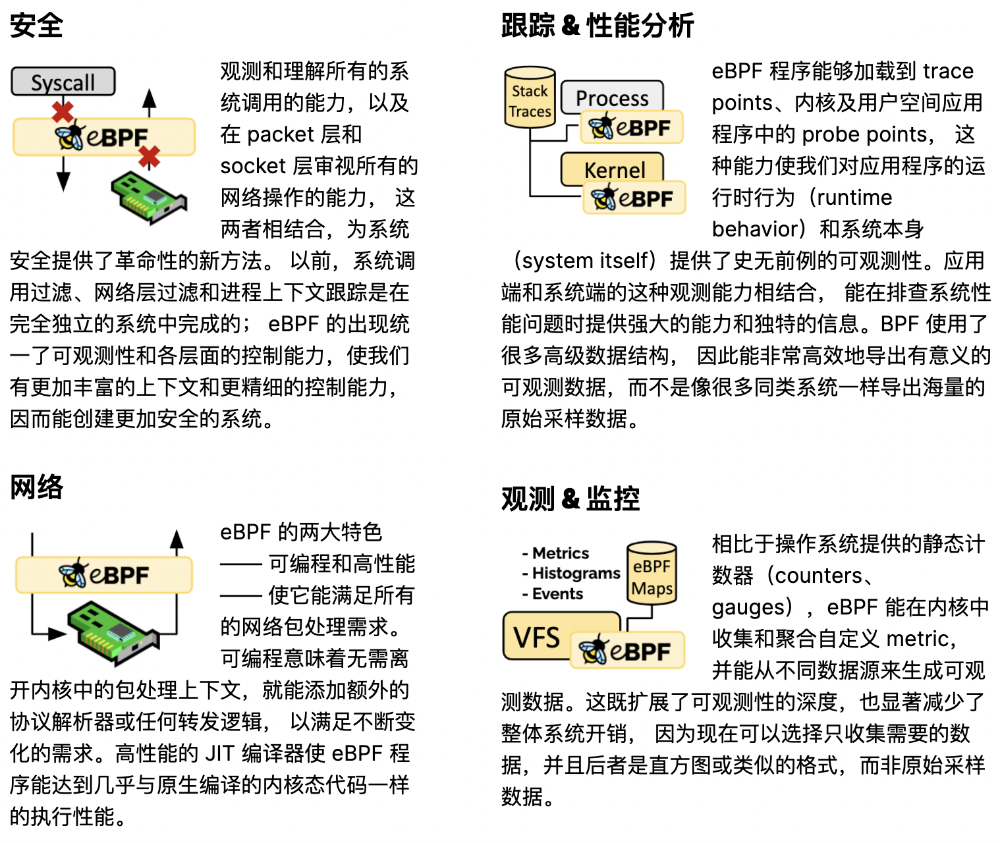

ebpf是一种创新的革命性技术，它能在内核中运行沙箱程序， 而无需修改内核源码或者加载内核模块。将 Linux 内核变成可编程之后，就能基于现有的（而非增加新的）抽象层来打造更加智能、 功能更加丰富的基础设施软件，而不会增加系统的复杂度，也不会牺牲执行效率和安全性。
BPF的第一个版本在1994年问世。我们在使用tcpdump工具编写规则的时候其实就使用到它了，该工具用于查看或”嗅探”网络数据包。

使用ebpf技术，你可以从安全、跟踪&性能分析、网络、观测&监控等方向提供新的思路和技术：
- 安全：可以从系统调用级、packet层、socket层进行安全检查，比如开发DDOS防护系统，编写防火墙程序。
- 网络：可以开发内核层高性能包处理程序，比如Cilium提供内核层的负载均衡，把service mesh往更深层推进，解决sidecar的性能问题。
- 跟踪&性能分析: Linux提供多种类型的探针点(probe point),比如Kernel probes、perf events、Tracepoints、User-space probes、User statically defined tracepoints、XDP等等，我们可以编写probe程序收集这些探针点的信息，所以我们可以通过这种方式跟踪程序，分析性能。
- 观测&监控: 对这些探针点的持续观测和监控，我们可以丰富我们的trace程序。关键是，我们不需要更改既有的程序，而是通过ebpf方法从其它程序进行观测。2014年，著名的内核黑客Alexei Starovoitov对BPF的功能进行了扩展。他增加了寄存器的数量和程序允许的大小，增加了JIT编译，并创建了一个用于检查程序是否安全的程序。然而，最令人印象深刻的是，新的BPF程序不仅能够在处理数据包时运行，而且能够响应其他内核事件，并在内核和用户空间之间来回传递信息。Alexei Starovoitov的新版本的BPF被称为eBPF（e代表扩展：extended）。但现在，它已经取代了所有旧版的BPF用法，并且已经变得非常流行，为了简单起见，它仍然被称为BPF。

你可以自己编写bpf程序，进行定制化的逻辑处理和分析，也可以使用大神们写好的工具，利用这些工具对程序进行通用的性能分析和跟踪。本文主要介绍使用一些工具对rpcx微服务程序进行通用的分析，既然是通用的，你可以可以对其它的Go程序进行分析，而且不仅限于Go程序，其它应用程序甚至内核你可以进行分析和跟踪。
自己编写bpf程序我准备再新开一篇文章介绍。
这一次主要介绍bcc提供的相关工具和bpftrace。
bcc是用于创建基于eBPF的高效内核跟踪和操作程序的工具包，其中包括一些有用的命令行工具和示例。 BCC简化了用C进行内核检测的eBPF程序的编写，包括LLVM的包装器以及Python和Lua的前端。它还提供了用于直接集成到应用程序中的高级库。
bpftrace是Linux eBPF的高级跟踪语言。它的语言受awk和C以及DTrace和SystemTap等以前的跟踪程序的启发。 bpftrace使用LLVM作为后端将脚本编译为eBPF字节码，并利用BCC作为与Linux eBPF子系统以及现有Linux跟踪功能和连接点进行交互的库。
简单的 rpcx 微服务程序
既然要使用ebpf分析程序，首先我们要有一个程序。这里我选取了rpcx一个最简单的例子，实现一个乘法的最小的微服务。
这个程序的代码可以在rpcx-examples-102basic下载到。
服务端的程序如下:
1 2 3 4 5 6 7 8 9 10 11 12 13 14 15 16 17 18 19 20 21 22 23 24 25 26 27 28 29 30 31 32 33 34
| package main import ( "context" "flag" "fmt" example "github.com/rpcxio/rpcx-examples" "github.com/smallnest/rpcx/server" ) var ( addr = flag.String("addr", "localhost:8972", "server address") ) type Arith struct{} func (t *Arith) Mul(ctx context.Context, args example.Args, reply *example.Reply) error { reply.C = args.A * args.B fmt.Println("C=", reply.C) return nil } func main() { flag.Parse() s := server.NewServer() s.RegisterName("Arith", new(Arith), "") err := s.Serve("tcp", *addr) if err != nil { panic(err) } }
|
使用go build server.go编译出server程序并运行(./server)。
客户端程序如下:
1 2 3 4 5 6 7 8 9 10 11 12 13 14 15 16 17 18 19 20 21 22 23 24 25 26 27 28 29 30 31 32 33 34 35 36 37 38 39 40 41 42 43 44 45
| package main import ( "context" "flag" "log" "time" "github.com/smallnest/rpcx/protocol" example "github.com/rpcxio/rpcx-examples" "github.com/smallnest/rpcx/client" ) var ( addr = flag.String("addr", "localhost:8972", "server address") ) func main() { flag.Parse() d, _ := client.NewPeer2PeerDiscovery("tcp@"+*addr, "") opt := client.DefaultOption opt.SerializeType = protocol.JSON xclient := client.NewXClient("Arith", client.Failtry, client.RandomSelect, d, opt) defer xclient.Close() args := example.Args{ A: 10, B: 20, } for { reply := &example.Reply{} err := xclient.Call(context.Background(), "Mul", args, reply) if err != nil { log.Fatalf("failed to call: %v", err) } log.Printf("%d * %d = %d", args.A, args.B, reply.C) time.Sleep(time.Second) } }
|
客户端每一秒会调用Arith.Mul微服务一次，微服务的逻辑也很简单，就是执行乘法，并把结果返回给客户端。
跟踪和分析微服务
作为演示，本文只跟踪服务端Arith.Mul调用情况。
bcc提供了很多的基于bpf的分析程序，如下图(大神Brendan Gregg整理的经典图)


这里我们会选取几个相关的工具演示如何使用这些工具分析运行中的程序。 注意是运行中的程序，我们并没有给程序添加额外的一些埋点。
bcc套件
首先你得安装bcc套件，而且你的Linux内核还要足够新，在一些大厂的机房内，还有一些内核版本的2.6.x服务器，这些老的内核服务器不能支持ebpf或者ebpf的新特性。
我是在我的阿里云的一台虚机上测试的，它的版本是:
- Linux lab 4.18.0-348.2.1.el8_5.x86_64
- CentOS Stream release 8
直接yum install bcc-tools就可以安装这些工具。
如果你是其它的版本的操作系统，你可以参考bcc的安装文档进行安装: bcc/INSTALL。
在使用工具分析之前，你首先要知道你的微服务Arith.Mul在符号表中的名称，你可以使用objdump查询到:
1 2
| [root@lab server] 000000000075a5e0 g F .text 00000000000000d0 main.(*Arith).Mul
|
它的名称是main.(*Arith).Mul,下面我们会使用这个名称分析这个微服务。
确保刚才的服务器一直在运行中。
funccount
funccount 用来统计一段时间内某个函数的调用次数。
在server所在的目录下执行下面的命令(如果在不同的路径，你需要更改命令参数中程序的路径):
1 2 3 4 5 6 7
| [root@lab server] Tracing 1 functions for "b'./server:main.*.Mul'"... Hit Ctrl-C to end. FUNC COUNT b'main.(*Arith).Mul' 10 Detaching... [root@lab server]
|
这里我们设置观察时间是10秒，可以看到在这10秒内，这个函数被调用了10次。
它包含几个参数，比如你可以持续观察，每5秒输出一次结果:
1 2 3 4 5 6
| [root@lab server] Tracing 1 functions for "b'./server:main.*.Mul'"... Hit Ctrl-C to end. 18:08:29 FUNC COUNT b'main.(*Arith).Mul' 5
|
我们甚至可以用它进行Go GC相关函数的跟踪:
1 2 3 4 5 6
| [root@lab server] Tracing 21 functions for "b'./server:runtime.*.gc*'"... Hit Ctrl-C to end. FUNC COUNT b'runtime.(*gcControllerState).update' 2 b'runtime.mallocgc' 250
|
抑或是跟踪Go运行时的调度:
1 2 3 4 5 6
| [root@lab server] Tracing 1 functions for "b'./server:runtime.schedule'"... Hit Ctrl-C to end. FUNC COUNT b'runtime.schedule' 20 Detaching...
|
funclatency
funclatency统计函数的执行的耗时情况。
如果我们想分析Arith.Mul方法执行的情况，我们可以使用下面的命令，它会用直方图的形式展示这个函数调用的耗时分布:
1 2 3 4 5 6 7 8 9 10 11 12 13 14 15 16 17 18 19 20 21 22 23 24
| [root@lab server] Tracing 1 functions for "./server:main.*.Mul"... Hit Ctrl-C to end. Function = b'main.(*Arith).Mul' [359284] nsecs : count distribution 0 -> 1 : 0 | | 2 -> 3 : 0 | | 4 -> 7 : 0 | | 8 -> 15 : 0 | | 16 -> 31 : 0 | | 32 -> 63 : 0 | | 64 -> 127 : 0 | | 128 -> 255 : 0 | | 256 -> 511 : 0 | | 512 -> 1023 : 0 | | 1024 -> 2047 : 0 | | 2048 -> 4095 : 0 | | 4096 -> 8191 : 0 | | 8192 -> 16383 : 0 | | 16384 -> 32767 : 7 |****************************************| 32768 -> 65535 : 3 |***************** | avg = 31978 nsecs, total: 319783 nsecs, count: 10
|
我们统计了10秒的数据。可以看到期间这个函数被调用了10次。平均耗时31微秒。
如果我们想检查线上的程序有没有长尾的现象，使用这个工具很容易分析统计。
funcslower
funcslower 这个工具可以跟踪内核和程序的执行慢的函数，比如使用下面的命令:
1 2 3 4 5 6 7
| [root@lab server] Tracing function calls slower than 10 us... Ctrl+C to quit. COMM PID LAT(us) RVAL FUNC server 359284 44.75 0 ./server:main.(*Arith).Mul server 359284 30.97 0 ./server:main.(*Arith).Mul server 359284 33.38 0 ./server:main.(*Arith).Mul server 359284 31.28 0 ./server:main.(*Arith).Mul
|
你甚至可以打印出堆栈信息:
1 2 3 4 5 6 7 8 9 10 11 12 13 14 15 16 17 18
| [root@lab server]funcslower -UK -u 10 './server:main.(*Arith).Mul' Tracing function calls slower than 10 us... Ctrl+C to quit. COMM PID LAT(us) RVAL FUNC server 359284 31.20 0 ./server:main.(*Arith).Mul b'runtime.call64.abi0' b'runtime.reflectcall' b'reflect.Value.call' b'reflect.Value.Call' b'github.com/smallnest/rpcx/server.(*service).call' b'github.com/smallnest/rpcx/server.(*Server).handleRequest' b'github.com/smallnest/rpcx/server.(*Server).serveConn.func2' b'runtime.goexit.abi0' server 359284 32.23 0 ./server:main.(*Arith).Mul b'runtime.call64.abi0' b'runtime.reflectcall' b'reflect.Value.call' b'reflect.Value.Call' b'github.com/smallnest/rpcx/server.(*service).call'
|
tcp 系列工具
bcc提供了一堆的对tcp的跟踪情况，我们可以针对不同的场景选择使用相应的工具。
- tools/tcpaccept: 跟踪TCP被动连接 (accept()).
- tools/tcpconnect: 跟踪TCP主动的连接 (connect()).
- tools/tcpconnlat: 跟踪TCP主动连接的延迟(connect()).
- tools/tcpdrop: 跟踪内核的TCP包的丢包细节.
- tools/tcplife: 跟踪TCP session(生命周期指标汇总).
- tools/tcpretrans: 跟踪TCP重传.
- tools/tcprtt: 跟踪TCP来回的耗时.
- tools/tcpstates: 跟踪TCP session状态的改变.
- tools/tcpsubnet: 按子网汇总和聚合TCP发送情况.
- tools/tcpsynbl: 显示TCP SYN backlog的情况.
- tools/tcptop: 按主机汇总TCP send/recv吞吐情况.
- tools/tcptracer: 跟踪TCP 建立/关闭连接的情况 (connect(), accept(), close()).
- tools/tcpcong: 跟踪TCP套接字拥塞控制状态持续时间.
比如我们如果关注连接的建立情况，可以使用tcptracer:
1 2 3 4 5 6 7 8 9 10 11
| [root@lab lib] Tracing TCP established connections. Ctrl-C to end. T PID COMM IP SADDR DADDR SPORT DPORT C 360005 client 4 127.0.0.1 127.0.0.1 43126 8972 X 360005 client 6 [::1] [::1] 43010 8972 A 359284 server 4 127.0.0.1 127.0.0.1 8972 43126 X 360005 client 4 127.0.0.1 127.0.0.1 43126 8972 X 359284 server 4 127.0.0.1 127.0.0.1 8972 43126 C 360009 client 4 127.0.0.1 127.0.0.1 43130 8972 X 360009 client 6 [::1] [::1] 43014 8972 A 359284 server 4 127.0.0.1 127.0.0.1 8972 43130
|
另外还有一堆的xxxxsnoop程序，可以对特定的系统调用进行跟踪。
bpftrace
有时候，我们想使用脚本实现一些定制化的跟踪，比如类似awk这样的工具，可以提供简单的脚本编写。
bpftrace就是这样的工具, 它使用LLVM作为后端将脚本编译为eBPF字节码，并利用BCC作为与Linux eBPF子系统以及现有Linux跟踪功能和连接点进行交互的库。
bpftrace参考手册可以在bpftrace reference_guide找到。
以我们的Arith.Mul为例，我们可以使用下面的命令，在函数调用时加入探针，把输入的参数打印出来:
1 2 3 4 5
| [root@lab server]# bpftrace -e 'uprobe:./server:main.*.Mul {printf("%s - %s: arg1: %d, arg2: %d\n", comm, func, arg0, arg1)}' Attaching 1 probe... server - main.(*Arith).Mul: arg1: 10, arg2: 20 server - main.(*Arith).Mul: arg1: 10, arg2: 20 server - main.(*Arith).Mul: arg1: 10, arg2: 20
|
为什么arg0,arg1就能把参数打印出来呢？简单说，我们的微服务参数正好是两个int64的整数，正好对应arg0,arg1。
rpcx的服务返回值也是当做参数传入的，函数调用的时候还没有设置，所以你如果打印arg3并不是reply返回值。
这个时候我们需要移动探针，加一个偏移量，加多少的偏移量呢？通过反汇编我们看到加92时返回值已经赋值了，所以使用下面的命令就可以打印返回值了(这个时候第一个参数就被覆盖掉了):
1 2 3 4 5
| [root@lab server]# bpftrace -e 'uprobe:./server:main.*.Mul+92 {printf("%s - %s: reply: %d\n", comm, func, arg0)}' Attaching 1 probe... server - main.(*Arith).Mul: reply: 200 server - main.(*Arith).Mul: reply: 200 server - main.(*Arith).Mul: reply: 200
|
Go自1.17开始已经改成了基于寄存器的调用惯例，所以这里使用了内建的arg0、arg1、..., 如果你使用更早的Go版本，这里你可以换成sarg0,sarg1,...试试(stack arguments)。
参考文档
- https://www.brendangregg.com/blog/2017-01-31/golang-bcc-bpf-function-tracing.html
- https://golangexample.com/library-to-work-with-ebpf-programs-from-golang/
- https://tonybai.com/2020/12/25/bpf-and-go-modern-forms-of-introspection-in-linux/
- https://networkop.co.uk/post/2021-03-ebpf-intro/
- https://medium.com/bumble-tech/bpf-and-go-modern-forms-of-introspection-in-linux-6b9802682223#db17
- https://blog.px.dev/ebpf-http-tracing/
- https://www.ebpf.top/post/ebpf_and_go/
- https://www.ebpf.top/